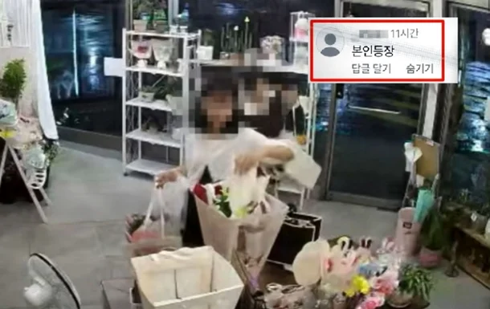
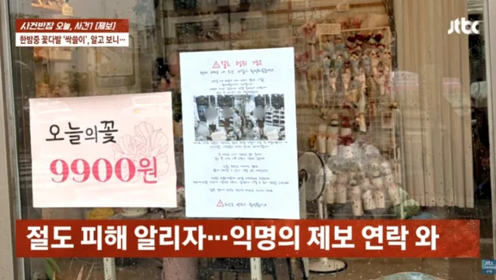

'무인 꽃집' 턴 여중생들…사장 SNS에 박제되자 "본인 등장" 댓글 : 네이트 뉴스


대전 서구의 한 무인 꽃집에서 중학생 2명이 30만원어치 꽃을 훔쳐 달아난 사건이 발생했다.
A씨는 지난 8월30일 꽃시장에 다녀온 뒤 가게를 찾았다가 진열해둔 꽃이 무더기로 사라진 것을 발견했다.
결제 내역이 없어 확인한 CCTV에는 학생 2명이 꽃을 훔쳐 가는 모습이 찍혀 있었다.
두 학생은 매장에서 양말을 벗고 대화를 나누거나 꽃 사진을 찍다가 진열된 꽃을 가방에 잔뜩 담았다.
이 과정에서 흰옷을 입은 학생은 CCTV를 정면으로 바라보기도 했다.
두 학생은 A씨의 우산까지 챙겨 달아났고, 매장에는 양말과 장난감이 남아 있었다.
신고를 받고 출동한 경찰은 현장에 남은 물건을 확보했다.
A씨도 CCTV 화면을 캡처해 SNS에 올렸고,
다음 날인 31일 밤 흰옷을 입었던 학생의 SNS 사진을 익명으로 제보받아 경찰에 전달했다.
그런데 해당 학생은 A씨의 게시물에 "본인 등장"이라는 댓글을 남기기도 했다.
이후 검은 옷을 입었던 학생의 어머니가 A씨에게 연락해 "어딘지 말씀해주시면 직접 아이 데리고 가겠다"며 영상을 내려달라고 요청했다.
얼마 뒤에는 딸이 집을 나가 돌아오지 않고 있다며 혼자 방문하겠다고 말을 바꿨다.
아이의 사춘기가 심하다면서 자신이라도 찾아가 사과하고 피해를 보상하겠다고 했다.
이 약속도 지켜지지 않았다.
어머니는 회사에서 시간을 내주지 않아 방문하기 어렵다더니,
결국 "아이 내놨다. 감옥 가든 말든 책임 안 지겠다"고 통보했다.
A씨는 이후 한 달 넘게 연락을 받지 못했다고 했다.
흰옷을 입었던 학생의 부모 역시 찾아오기로 했다가 당일 약속을 취소했다.
A씨는 학생들과 부모의 반성 없는 태도에 민사소송을 내기로 했다고 밝혔다.
경찰은 두 학생이 14세 미만 촉법소년에 해당한다며, 이들이 연루된 다른 사건과 병합해 가정법원 소년부로 송치할 예정이라고 A씨에게 알렸다.
촉법엔딩각
이들이 연루된 다른 사건과 병합해, ㅋㅋㅋㅋ
애초에 개과천선 가능성이 없는 존재들이라고 본다. 사회에 방생하지 않는 게 모두에게 이익